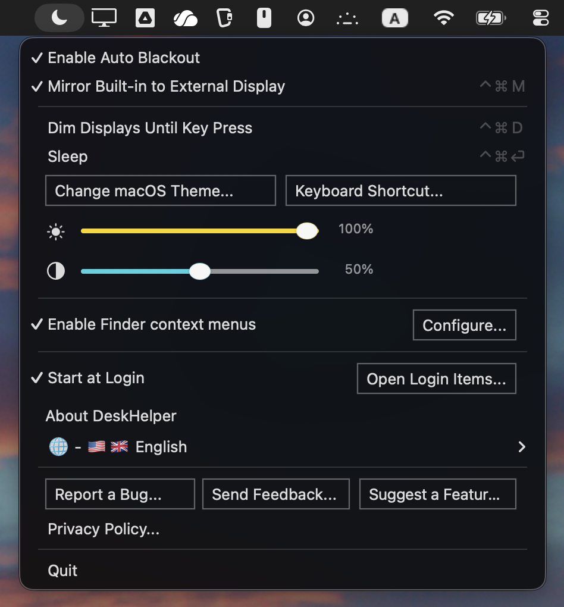

Utilitário da barra de menu Mac App Store
DeskHelper
Um aplicativo silencioso de barra de menu para controle de exibição MacBook, contexto Finder ações de menu e criptografia Safe local.
Apagão
Mantenha a tela MacBook integrada escura enquanto espelha para um monitor externo.
Controles
Espelhar, escurecer, suspender, exibir níveis e atalhos na barra de menu.
Finder
Crie arquivos e pastas, cole itens copiados, copie caminhos, abra seleções Finder e criptografe ou descriptografe Safes locais.
Edição Mac App Store
Finder menus de contexto
Cofres Locais
Nenhuma conta
O que é isso?
Tudo o que faz.
- Apagão automático Mantém a tela MacBook integrada escura enquanto espelha uma tela externa.
- Controles de exibição Alterne o espelhamento, escureça as telas até pressionar a tecla, suspenda o Mac e ajuste o brilho ou contraste da tela na barra de menu.
- Finder menus de contexto Use Novo Arquivo, Nova Pasta, Colar, Copiar Caminho e Abrir em TextEdit, Terminal, Codex, Claude, VSCode ou outro aplicativo compatível de Finder.
- Cofres Criptografe arquivos ou pastas locais selecionados em um único arquivo .safe, adicione a um Safe existente ou descriptografe um Safe de volta em uma pasta.
- Noções básicas de privacidade Sem conta, sem análises, sem janela Dock e sem upload para ações Finder ou Safe.


O que há de bom nisso?
Menos confusão em torno de monitores e arquivos.
- Só desmaia quando deveria escuro quando espelhado, normal quando a tela MacBook faz parte da sua área de trabalho
- Ações rápidas do dia a dia alternar espelhamento, diminuir a intensidade até pressionar a tecla, suspender, ajustar os níveis de exibição, criar arquivos e pastas, colar itens copiados, copiar caminhos, abrir seleções Finder e criptografar Safes nos menus de contexto
- Local primeiro por padrão as configurações permanecem no seu Mac, o feedback é aberto como um rascunho de e-mail revisável e não há SDK de análise
- Instalar baixe DeskHelper do Mac App Store assim que a listagem estiver disponível
- Atualizar receber atualizações através do Mac App Store
- Configurar habilite a extensão Finder nas configurações macOS se desejar menus de contexto; conceder acesso à pasta somente quando uma ação Finder precisar
macOS 13.0 ou posterior
Apple Silicon + Intel
- 1 Abra a listagem Mac App Store.
- 2 Instale DeskHelper.
- 3 Inicie-o em Aplicativos.
Mac App Store link chegando quando a listagem estiver pronta.